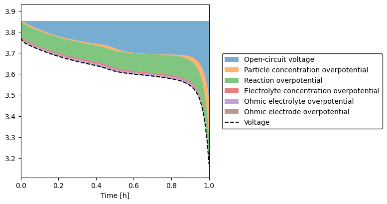

Tip
An interactive online version of this notebook is available, which can be
accessed via

Alternatively, you may download this notebook and run it offline.
Tutorial 3 - Basic plotting#
In Tutorial 2, we made use of PyBaMM’s automatic plotting function when comparing models. This gave a good quick overview of many of the key variables in the model. However, by passing in just a few arguments it is easy to plot any of the many other variables that may be of interest to you. We start by building and solving a model as before:
[1]:
%pip install "pybamm[plot,cite]" -q # install PyBaMM if it is not installed
import pybamm
model = pybamm.lithium_ion.DFN()
sim = pybamm.Simulation(model)
sim.solve([0, 3600])
[notice] A new release of pip is available: 23.3.1 -> 23.3.2
[notice] To update, run: pip install --upgrade pip
Note: you may need to restart the kernel to use updated packages.
An NVIDIA GPU may be present on this machine, but a CUDA-enabled jaxlib is not installed. Falling back to cpu.
[1]:
<pybamm.solvers.solution.Solution at 0x7fe14bc6cb90>
There are many more variables available from PyBaMM models than those in the default plots. One can see a full list of the available variables by just calling the variable_names method:
[2]:
model.variable_names()
[2]:
['Time [s]',
'Time [min]',
'Time [h]',
'x [m]',
'x_n [m]',
'x_s [m]',
'x_p [m]',
'r_n [m]',
'r_p [m]',
'Current variable [A]',
'Total current density [A.m-2]',
'Current [A]',
'C-rate',
'Discharge capacity [A.h]',
'Throughput capacity [A.h]',
'Discharge energy [W.h]',
'Throughput energy [W.h]',
'Porosity',
'Negative electrode porosity',
'X-averaged negative electrode porosity',
'Separator porosity',
'X-averaged separator porosity',
'Positive electrode porosity',
'X-averaged positive electrode porosity',
'Porosity change',
'Negative electrode porosity change [s-1]',
'X-averaged negative electrode porosity change [s-1]',
'Separator porosity change [s-1]',
'X-averaged separator porosity change [s-1]',
'Positive electrode porosity change [s-1]',
'X-averaged positive electrode porosity change [s-1]',
'Negative electrode interface utilisation variable',
'X-averaged negative electrode interface utilisation variable',
'Negative electrode interface utilisation',
'X-averaged negative electrode interface utilisation',
'Positive electrode interface utilisation variable',
'X-averaged positive electrode interface utilisation variable',
'Positive electrode interface utilisation',
'X-averaged positive electrode interface utilisation',
'Negative particle crack length [m]',
'X-averaged negative particle crack length [m]',
'Negative particle cracking rate [m.s-1]',
'X-averaged negative particle cracking rate [m.s-1]',
'Positive particle crack length [m]',
'X-averaged positive particle crack length [m]',
'Positive particle cracking rate [m.s-1]',
'X-averaged positive particle cracking rate [m.s-1]',
'Negative electrode active material volume fraction',
'X-averaged negative electrode active material volume fraction',
'Negative electrode capacity [A.h]',
'Negative particle radius',
'Negative particle radius [m]',
'X-averaged negative particle radius [m]',
'Negative electrode surface area to volume ratio [m-1]',
'X-averaged negative electrode surface area to volume ratio [m-1]',
'Negative electrode active material volume fraction change [s-1]',
'X-averaged negative electrode active material volume fraction change [s-1]',
'Loss of lithium due to loss of active material in negative electrode [mol]',
'Positive electrode active material volume fraction',
'X-averaged positive electrode active material volume fraction',
'Positive electrode capacity [A.h]',
'Positive particle radius',
'Positive particle radius [m]',
'X-averaged positive particle radius [m]',
'Positive electrode surface area to volume ratio [m-1]',
'X-averaged positive electrode surface area to volume ratio [m-1]',
'Positive electrode active material volume fraction change [s-1]',
'X-averaged positive electrode active material volume fraction change [s-1]',
'Loss of lithium due to loss of active material in positive electrode [mol]',
'Separator pressure [Pa]',
'X-averaged separator pressure [Pa]',
'negative electrode transverse volume-averaged velocity [m.s-1]',
'X-averaged negative electrode transverse volume-averaged velocity [m.s-1]',
'separator transverse volume-averaged velocity [m.s-1]',
'X-averaged separator transverse volume-averaged velocity [m.s-1]',
'positive electrode transverse volume-averaged velocity [m.s-1]',
'X-averaged positive electrode transverse volume-averaged velocity [m.s-1]',
'Transverse volume-averaged velocity [m.s-1]',
'negative electrode transverse volume-averaged acceleration [m.s-2]',
'X-averaged negative electrode transverse volume-averaged acceleration [m.s-2]',
'separator transverse volume-averaged acceleration [m.s-2]',
'X-averaged separator transverse volume-averaged acceleration [m.s-2]',
'positive electrode transverse volume-averaged acceleration [m.s-2]',
'X-averaged positive electrode transverse volume-averaged acceleration [m.s-2]',
'Transverse volume-averaged acceleration [m.s-2]',
'Negative electrode volume-averaged velocity [m.s-1]',
'Negative electrode volume-averaged acceleration [m.s-2]',
'X-averaged negative electrode volume-averaged acceleration [m.s-2]',
'Negative electrode pressure [Pa]',
'X-averaged negative electrode pressure [Pa]',
'Positive electrode volume-averaged velocity [m.s-1]',
'Positive electrode volume-averaged acceleration [m.s-2]',
'X-averaged positive electrode volume-averaged acceleration [m.s-2]',
'Positive electrode pressure [Pa]',
'X-averaged positive electrode pressure [Pa]',
'Negative particle concentration [mol.m-3]',
'X-averaged negative particle concentration [mol.m-3]',
'R-averaged negative particle concentration [mol.m-3]',
'Average negative particle concentration [mol.m-3]',
'Negative particle surface concentration [mol.m-3]',
'X-averaged negative particle surface concentration [mol.m-3]',
'Minimum negative particle concentration [mol.m-3]',
'Maximum negative particle concentration [mol.m-3]',
'Minimum negative particle Minimum negative particle surface concentration [mol.m-3]',
'Maximum negative particle surface concentration [mol.m-3]',
'Negative particle concentration',
'X-averaged negative particle concentration',
'R-averaged negative particle concentration',
'Average negative particle concentration',
'Negative particle surface concentration',
'X-averaged negative particle surface concentration',
'Minimum negative particle concentration',
'Maximum negative particle concentration',
'Minimum negative particle surface concentration',
'Maximum negative particle surface concentration',
'Negative particle stoichiometry',
'X-averaged negative particle stoichiometry',
'R-averaged negative particle stoichiometry',
'Average negative particle stoichiometry',
'Negative particle surface stoichiometry',
'X-averaged negative particle surface stoichiometry',
'Minimum negative particle stoichiometry',
'Maximum negative particle stoichiometry',
'Minimum negative particle surface stoichiometry',
'Maximum negative particle surface stoichiometry',
'Negative electrode extent of lithiation',
'X-averaged negative electrode extent of lithiation',
'Positive particle concentration [mol.m-3]',
'X-averaged positive particle concentration [mol.m-3]',
'R-averaged positive particle concentration [mol.m-3]',
'Average positive particle concentration [mol.m-3]',
'Positive particle surface concentration [mol.m-3]',
'X-averaged positive particle surface concentration [mol.m-3]',
'Minimum positive particle concentration [mol.m-3]',
'Maximum positive particle concentration [mol.m-3]',
'Minimum positive particle Minimum positive particle surface concentration [mol.m-3]',
'Maximum positive particle surface concentration [mol.m-3]',
'Positive particle concentration',
'X-averaged positive particle concentration',
'R-averaged positive particle concentration',
'Average positive particle concentration',
'Positive particle surface concentration',
'X-averaged positive particle surface concentration',
'Minimum positive particle concentration',
'Maximum positive particle concentration',
'Minimum positive particle surface concentration',
'Maximum positive particle surface concentration',
'Positive particle stoichiometry',
'X-averaged positive particle stoichiometry',
'R-averaged positive particle stoichiometry',
'Average positive particle stoichiometry',
'Positive particle surface stoichiometry',
'X-averaged positive particle surface stoichiometry',
'Minimum positive particle stoichiometry',
'Maximum positive particle stoichiometry',
'Minimum positive particle surface stoichiometry',
'Maximum positive particle surface stoichiometry',
'Positive electrode extent of lithiation',
'X-averaged positive electrode extent of lithiation',
'Negative electrode potential [V]',
'X-averaged negative electrode potential [V]',
'Negative electrode ohmic losses [V]',
'X-averaged negative electrode ohmic losses [V]',
'Gradient of negative electrode potential [V.m-1]',
'Positive electrode potential [V]',
'X-averaged positive electrode potential [V]',
'Positive electrode ohmic losses [V]',
'X-averaged positive electrode ohmic losses [V]',
'Gradient of positive electrode potential [V.m-1]',
'Porosity times concentration [mol.m-3]',
'Negative electrode porosity times concentration [mol.m-3]',
'Separator porosity times concentration [mol.m-3]',
'Positive electrode porosity times concentration [mol.m-3]',
'Total lithium in electrolyte [mol]',
'Electrolyte potential [V]',
'X-averaged electrolyte potential [V]',
'X-averaged electrolyte overpotential [V]',
'Gradient of electrolyte potential [V.m-1]',
'Negative electrolyte potential [V]',
'X-averaged negative electrolyte potential [V]',
'Gradient of negative electrolyte potential [V.m-1]',
'Separator electrolyte potential [V]',
'X-averaged separator electrolyte potential [V]',
'Gradient of separator electrolyte potential [V.m-1]',
'Positive electrolyte potential [V]',
'X-averaged positive electrolyte potential [V]',
'Gradient of positive electrolyte potential [V.m-1]',
'Ambient temperature [K]',
'Volume-averaged ambient temperature [K]',
'Cell temperature [K]',
'Negative current collector temperature [K]',
'Positive current collector temperature [K]',
'X-averaged cell temperature [K]',
'Volume-averaged cell temperature [K]',
'Negative electrode temperature [K]',
'X-averaged negative electrode temperature [K]',
'Separator temperature [K]',
'X-averaged separator temperature [K]',
'Positive electrode temperature [K]',
'X-averaged positive electrode temperature [K]',
'Ambient temperature [C]',
'Volume-averaged ambient temperature [C]',
'Cell temperature [C]',
'Negative current collector temperature [C]',
'Positive current collector temperature [C]',
'X-averaged cell temperature [C]',
'Volume-averaged cell temperature [C]',
'Negative electrode temperature [C]',
'X-averaged negative electrode temperature [C]',
'Separator temperature [C]',
'X-averaged separator temperature [C]',
'Positive electrode temperature [C]',
'X-averaged positive electrode temperature [C]',
'Negative current collector potential [V]',
'Negative inner SEI thickness [m]',
'Negative outer SEI thickness [m]',
'X-averaged negative inner SEI thickness [m]',
'X-averaged negative outer SEI thickness [m]',
'Negative SEI [m]',
'Negative total SEI thickness [m]',
'X-averaged negative SEI thickness [m]',
'X-averaged negative total SEI thickness [m]',
'X-averaged negative electrode resistance [Ohm.m2]',
'Negative electrode inner SEI interfacial current density [A.m-2]',
'X-averaged negative electrode inner SEI interfacial current density [A.m-2]',
'Negative electrode outer SEI interfacial current density [A.m-2]',
'X-averaged negative electrode outer SEI interfacial current density [A.m-2]',
'Negative electrode SEI interfacial current density [A.m-2]',
'X-averaged negative electrode SEI interfacial current density [A.m-2]',
'Positive inner SEI thickness [m]',
'Positive outer SEI thickness [m]',
'X-averaged positive inner SEI thickness [m]',
'X-averaged positive outer SEI thickness [m]',
'Positive SEI [m]',
'Positive total SEI thickness [m]',
'X-averaged positive SEI thickness [m]',
'X-averaged positive total SEI thickness [m]',
'X-averaged positive electrode resistance [Ohm.m2]',
'Positive electrode inner SEI interfacial current density [A.m-2]',
'X-averaged positive electrode inner SEI interfacial current density [A.m-2]',
'Positive electrode outer SEI interfacial current density [A.m-2]',
'X-averaged positive electrode outer SEI interfacial current density [A.m-2]',
'Positive electrode SEI interfacial current density [A.m-2]',
'X-averaged positive electrode SEI interfacial current density [A.m-2]',
'Negative inner SEI on cracks thickness [m]',
'Negative outer SEI on cracks thickness [m]',
'X-averaged negative inner SEI on cracks thickness [m]',
'X-averaged negative outer SEI on cracks thickness [m]',
'Negative SEI on cracks [m]',
'Negative total SEI on cracks thickness [m]',
'X-averaged negative SEI on cracks thickness [m]',
'X-averaged negative total SEI on cracks thickness [m]',
'Negative electrode inner SEI on cracks interfacial current density [A.m-2]',
'X-averaged negative electrode inner SEI on cracks interfacial current density [A.m-2]',
'Negative electrode outer SEI on cracks interfacial current density [A.m-2]',
'X-averaged negative electrode outer SEI on cracks interfacial current density [A.m-2]',
'Negative electrode SEI on cracks interfacial current density [A.m-2]',
'X-averaged negative electrode SEI on cracks interfacial current density [A.m-2]',
'Positive inner SEI on cracks thickness [m]',
'Positive outer SEI on cracks thickness [m]',
'X-averaged positive inner SEI on cracks thickness [m]',
'X-averaged positive outer SEI on cracks thickness [m]',
'Positive SEI on cracks [m]',
'Positive total SEI on cracks thickness [m]',
'X-averaged positive SEI on cracks thickness [m]',
'X-averaged positive total SEI on cracks thickness [m]',
'Positive electrode inner SEI on cracks interfacial current density [A.m-2]',
'X-averaged positive electrode inner SEI on cracks interfacial current density [A.m-2]',
'Positive electrode outer SEI on cracks interfacial current density [A.m-2]',
'X-averaged positive electrode outer SEI on cracks interfacial current density [A.m-2]',
'Positive electrode SEI on cracks interfacial current density [A.m-2]',
'X-averaged positive electrode SEI on cracks interfacial current density [A.m-2]',
'Negative lithium plating concentration [mol.m-3]',
'X-averaged negative lithium plating concentration [mol.m-3]',
'Negative dead lithium concentration [mol.m-3]',
'X-averaged negative dead lithium concentration [mol.m-3]',
'Negative lithium plating thickness [m]',
'X-averaged negative lithium plating thickness [m]',
'Negative dead lithium thickness [m]',
'X-averaged negative dead lithium thickness [m]',
'Loss of lithium to negative lithium plating [mol]',
'Loss of capacity to negative lithium plating [A.h]',
'Negative electrode lithium plating reaction overpotential [V]',
'X-averaged negative electrode lithium plating reaction overpotential [V]',
'Negative lithium plating interfacial current density [A.m-2]',
'X-averaged negative lithium plating interfacial current density [A.m-2]',
'Positive lithium plating concentration [mol.m-3]',
'X-averaged positive lithium plating concentration [mol.m-3]',
'Positive dead lithium concentration [mol.m-3]',
'X-averaged positive dead lithium concentration [mol.m-3]',
'Positive lithium plating thickness [m]',
'X-averaged positive lithium plating thickness [m]',
'Positive dead lithium thickness [m]',
'X-averaged positive dead lithium thickness [m]',
'Loss of lithium to positive lithium plating [mol]',
'Loss of capacity to positive lithium plating [A.h]',
'Positive electrode lithium plating reaction overpotential [V]',
'X-averaged positive electrode lithium plating reaction overpotential [V]',
'Positive lithium plating interfacial current density [A.m-2]',
'X-averaged positive lithium plating interfacial current density [A.m-2]',
'Negative crack surface to volume ratio [m-1]',
'Negative electrode roughness ratio',
'X-averaged negative electrode roughness ratio',
'Positive crack surface to volume ratio [m-1]',
'Positive electrode roughness ratio',
'X-averaged positive electrode roughness ratio',
'Electrolyte transport efficiency',
'Negative electrolyte transport efficiency',
'X-averaged negative electrolyte transport efficiency',
'Separator electrolyte transport efficiency',
'X-averaged separator electrolyte transport efficiency',
'Positive electrolyte transport efficiency',
'X-averaged positive electrolyte transport efficiency',
'Electrode transport efficiency',
'Negative electrode transport efficiency',
'X-averaged negative electrode transport efficiency',
'Separator electrode transport efficiency',
'X-averaged separator electrode transport efficiency',
'Positive electrode transport efficiency',
'X-averaged positive electrode transport efficiency',
'Separator volume-averaged velocity [m.s-1]',
'Separator volume-averaged acceleration [m.s-2]',
'X-averaged separator volume-averaged acceleration [m.s-2]',
'Volume-averaged velocity [m.s-1]',
'Volume-averaged acceleration [m.s-1]',
'X-averaged volume-averaged acceleration [m.s-1]',
'Pressure [Pa]',
'Negative electrode stoichiometry',
'Negative electrode volume-averaged concentration',
'Negative electrode volume-averaged concentration [mol.m-3]',
'Total lithium in primary phase in negative electrode [mol]',
'Positive electrode stoichiometry',
'Positive electrode volume-averaged concentration',
'Positive electrode volume-averaged concentration [mol.m-3]',
'Total lithium in primary phase in positive electrode [mol]',
'Negative electrode effective conductivity',
'Negative electrode current density [A.m-2]',
'Positive electrode effective conductivity',
'Positive electrode current density [A.m-2]',
'Electrode current density [A.m-2]',
'Positive current collector potential [V]',
'Local voltage [V]',
'Terminal voltage [V]',
'Voltage [V]',
'Contact overpotential [V]',
'Electrolyte concentration concatenation [mol.m-3]',
'Negative electrolyte concentration [mol.m-3]',
'X-averaged negative electrolyte concentration [mol.m-3]',
'Separator electrolyte concentration [mol.m-3]',
'X-averaged separator electrolyte concentration [mol.m-3]',
'Positive electrolyte concentration [mol.m-3]',
'X-averaged positive electrolyte concentration [mol.m-3]',
'Negative electrolyte concentration [Molar]',
'X-averaged negative electrolyte concentration [Molar]',
'Separator electrolyte concentration [Molar]',
'X-averaged separator electrolyte concentration [Molar]',
'Positive electrolyte concentration [Molar]',
'X-averaged positive electrolyte concentration [Molar]',
'Electrolyte concentration [mol.m-3]',
'X-averaged electrolyte concentration [mol.m-3]',
'Electrolyte concentration [Molar]',
'X-averaged electrolyte concentration [Molar]',
'Electrolyte current density [A.m-2]',
'X-averaged concentration overpotential [V]',
'X-averaged electrolyte ohmic losses [V]',
'Negative electrode surface potential difference [V]',
'Negative electrode surface potential difference at separator interface [V]',
'X-averaged negative electrode surface potential difference [V]',
'Positive electrode surface potential difference [V]',
'Positive electrode surface potential difference at separator interface [V]',
'X-averaged positive electrode surface potential difference [V]',
'Ohmic heating [W.m-3]',
'X-averaged Ohmic heating [W.m-3]',
'Volume-averaged Ohmic heating [W.m-3]',
'Irreversible electrochemical heating [W.m-3]',
'X-averaged irreversible electrochemical heating [W.m-3]',
'Volume-averaged irreversible electrochemical heating [W.m-3]',
'Reversible heating [W.m-3]',
'X-averaged reversible heating [W.m-3]',
'Volume-averaged reversible heating [W.m-3]',
'Total heating [W.m-3]',
'X-averaged total heating [W.m-3]',
'Volume-averaged total heating [W.m-3]',
'Current collector current density [A.m-2]',
'Negative inner SEI concentration [mol.m-3]',
'X-averaged negative inner SEI concentration [mol.m-3]',
'Negative outer SEI concentration [mol.m-3]',
'X-averaged negative outer SEI concentration [mol.m-3]',
'Negative SEI concentration [mol.m-3]',
'X-averaged negative SEI concentration [mol.m-3]',
'Loss of lithium to negative SEI [mol]',
'Loss of capacity to negative SEI [A.h]',
'Negative electrode SEI volumetric interfacial current density [A.m-3]',
'X-averaged negative electrode SEI volumetric interfacial current density [A.m-3]',
'Positive inner SEI concentration [mol.m-3]',
'X-averaged positive inner SEI concentration [mol.m-3]',
'Positive outer SEI concentration [mol.m-3]',
'X-averaged positive outer SEI concentration [mol.m-3]',
'Positive SEI concentration [mol.m-3]',
'X-averaged positive SEI concentration [mol.m-3]',
'Loss of lithium to positive SEI [mol]',
'Loss of capacity to positive SEI [A.h]',
'Positive electrode SEI volumetric interfacial current density [A.m-3]',
'X-averaged positive electrode SEI volumetric interfacial current density [A.m-3]',
'Negative inner SEI on cracks concentration [mol.m-3]',
'X-averaged negative inner SEI on cracks concentration [mol.m-3]',
'Negative outer SEI on cracks concentration [mol.m-3]',
'X-averaged negative outer SEI on cracks concentration [mol.m-3]',
'Negative SEI on cracks concentration [mol.m-3]',
'X-averaged negative SEI on cracks concentration [mol.m-3]',
'Loss of lithium to negative SEI on cracks [mol]',
'Loss of capacity to negative SEI on cracks [A.h]',
'Negative electrode SEI on cracks volumetric interfacial current density [A.m-3]',
'X-averaged negative electrode SEI on cracks volumetric interfacial current density [A.m-3]',
'Positive inner SEI on cracks concentration [mol.m-3]',
'X-averaged positive inner SEI on cracks concentration [mol.m-3]',
'Positive outer SEI on cracks concentration [mol.m-3]',
'X-averaged positive outer SEI on cracks concentration [mol.m-3]',
'Positive SEI on cracks concentration [mol.m-3]',
'X-averaged positive SEI on cracks concentration [mol.m-3]',
'Loss of lithium to positive SEI on cracks [mol]',
'Loss of capacity to positive SEI on cracks [A.h]',
'Positive electrode SEI on cracks volumetric interfacial current density [A.m-3]',
'X-averaged positive electrode SEI on cracks volumetric interfacial current density [A.m-3]',
'Negative electrode lithium plating interfacial current density [A.m-2]',
'X-averaged negative electrode lithium plating interfacial current density [A.m-2]',
'Negative lithium plating volumetric interfacial current density [A.m-3]',
'X-averaged negative lithium plating volumetric interfacial current density [A.m-3]',
'Negative electrode lithium plating volumetric interfacial current density [A.m-3]',
'X-averaged negative electrode lithium plating volumetric interfacial current density [A.m-3]',
'Positive electrode lithium plating interfacial current density [A.m-2]',
'X-averaged positive electrode lithium plating interfacial current density [A.m-2]',
'Positive lithium plating volumetric interfacial current density [A.m-3]',
'X-averaged positive lithium plating volumetric interfacial current density [A.m-3]',
'Positive electrode lithium plating volumetric interfacial current density [A.m-3]',
'X-averaged positive electrode lithium plating volumetric interfacial current density [A.m-3]',
'Negative electrode open-circuit potential [V]',
'X-averaged negative electrode open-circuit potential [V]',
'Negative electrode bulk open-circuit potential [V]',
'Negative particle concentration overpotential [V]',
'Negative electrode entropic change [V.K-1]',
'X-averaged negative electrode entropic change [V.K-1]',
'Positive electrode open-circuit potential [V]',
'X-averaged positive electrode open-circuit potential [V]',
'Positive electrode bulk open-circuit potential [V]',
'Positive particle concentration overpotential [V]',
'Positive electrode entropic change [V.K-1]',
'X-averaged positive electrode entropic change [V.K-1]',
'Negative electrode interfacial current density [A.m-2]',
'X-averaged negative electrode interfacial current density [A.m-2]',
'X-averaged negative electrode total interfacial current density [A.m-2]',
'X-averaged negative electrode total volumetric interfacial current density [A.m-3]',
'Negative electrode exchange current density [A.m-2]',
'X-averaged negative electrode exchange current density [A.m-2]',
'Negative electrode reaction overpotential [V]',
'X-averaged negative electrode reaction overpotential [V]',
'Negative electrode volumetric interfacial current density [A.m-3]',
'X-averaged negative electrode volumetric interfacial current density [A.m-3]',
'Negative electrode SEI film overpotential [V]',
'X-averaged negative electrode SEI film overpotential [V]',
'Positive electrode interfacial current density [A.m-2]',
'X-averaged positive electrode interfacial current density [A.m-2]',
'X-averaged positive electrode total interfacial current density [A.m-2]',
'X-averaged positive electrode total volumetric interfacial current density [A.m-3]',
'Positive electrode exchange current density [A.m-2]',
'X-averaged positive electrode exchange current density [A.m-2]',
'Positive electrode reaction overpotential [V]',
'X-averaged positive electrode reaction overpotential [V]',
'Positive electrode volumetric interfacial current density [A.m-3]',
'X-averaged positive electrode volumetric interfacial current density [A.m-3]',
'Positive electrode SEI film overpotential [V]',
'X-averaged positive electrode SEI film overpotential [V]',
'Negative particle rhs [mol.m-3.s-1]',
'Negative particle bc [mol.m-4]',
'Negative particle effective diffusivity [m2.s-1]',
'X-averaged negative particle effective diffusivity [m2.s-1]',
'Volume-averaged negative particle effective diffusivity [m2.s-1]',
'Negative particle flux [mol.m-2.s-1]',
'Positive particle rhs [mol.m-3.s-1]',
'Positive particle bc [mol.m-4]',
'Positive particle effective diffusivity [m2.s-1]',
'X-averaged positive particle effective diffusivity [m2.s-1]',
'Volume-averaged positive particle effective diffusivity [m2.s-1]',
'Positive particle flux [mol.m-2.s-1]',
'Electrolyte flux [mol.m-2.s-1]',
'Electrolyte diffusion flux [mol.m-2.s-1]',
'Electrolyte migration flux [mol.m-2.s-1]',
'Electrolyte convection flux [mol.m-2.s-1]',
'Sum of negative electrode electrolyte reaction source terms [A.m-3]',
'Sum of x-averaged negative electrode electrolyte reaction source terms [A.m-3]',
'Sum of negative electrode volumetric interfacial current densities [A.m-3]',
'Sum of x-averaged negative electrode volumetric interfacial current densities [A.m-3]',
'Sum of positive electrode electrolyte reaction source terms [A.m-3]',
'Sum of x-averaged positive electrode electrolyte reaction source terms [A.m-3]',
'Sum of positive electrode volumetric interfacial current densities [A.m-3]',
'Sum of x-averaged positive electrode volumetric interfacial current densities [A.m-3]',
'Interfacial current density [A.m-2]',
'Exchange current density [A.m-2]',
'Sum of volumetric interfacial current densities [A.m-3]',
'Sum of electrolyte reaction source terms [A.m-3]',
'Surface open-circuit voltage [V]',
'Bulk open-circuit voltage [V]',
'Particle concentration overpotential [V]',
'X-averaged reaction overpotential [V]',
'X-averaged SEI film overpotential [V]',
'X-averaged solid phase ohmic losses [V]',
'Battery open-circuit voltage [V]',
'Battery negative electrode bulk open-circuit potential [V]',
'Battery positive electrode bulk open-circuit potential [V]',
'Battery particle concentration overpotential [V]',
'Battery negative particle concentration overpotential [V]',
'Battery positive particle concentration overpotential [V]',
'X-averaged battery reaction overpotential [V]',
'X-averaged battery negative reaction overpotential [V]',
'X-averaged battery positive reaction overpotential [V]',
'X-averaged battery solid phase ohmic losses [V]',
'X-averaged battery negative solid phase ohmic losses [V]',
'X-averaged battery positive solid phase ohmic losses [V]',
'X-averaged battery electrolyte ohmic losses [V]',
'X-averaged battery concentration overpotential [V]',
'Battery voltage [V]',
'Local ECM resistance [Ohm]',
'Terminal power [W]',
'Power [W]',
'Resistance [Ohm]',
'Total lithium in negative electrode [mol]',
'LAM_ne [%]',
'Loss of active material in negative electrode [%]',
'Total lithium in positive electrode [mol]',
'LAM_pe [%]',
'Loss of active material in positive electrode [%]',
'LLI [%]',
'Loss of lithium inventory [%]',
'Loss of lithium inventory, including electrolyte [%]',
'Total lithium [mol]',
'Total lithium in particles [mol]',
'Total lithium capacity [A.h]',
'Total lithium capacity in particles [A.h]',
'Total lithium lost [mol]',
'Total lithium lost from particles [mol]',
'Total lithium lost from electrolyte [mol]',
'Total lithium lost to side reactions [mol]',
'Total capacity lost to side reactions [A.h]']
There are a lot of variables, however. You can also search the list of variables for a particular string (e.g. “electrolyte”), by calling:
[3]:
model.variables.search("electrolyte")
Electrolyte concentration [Molar]
Electrolyte concentration [mol.m-3]
Electrolyte concentration concatenation [mol.m-3]
Electrolyte convection flux [mol.m-2.s-1]
Electrolyte current density [A.m-2]
Electrolyte diffusion flux [mol.m-2.s-1]
Electrolyte flux [mol.m-2.s-1]
Electrolyte migration flux [mol.m-2.s-1]
Electrolyte potential [V]
Electrolyte transport efficiency
Gradient of electrolyte potential [V.m-1]
Gradient of negative electrolyte potential [V.m-1]
Gradient of positive electrolyte potential [V.m-1]
Gradient of separator electrolyte potential [V.m-1]
Loss of lithium inventory, including electrolyte [%]
Negative electrolyte concentration [Molar]
Negative electrolyte concentration [mol.m-3]
Negative electrolyte potential [V]
Negative electrolyte transport efficiency
Positive electrolyte concentration [Molar]
Positive electrolyte concentration [mol.m-3]
Positive electrolyte potential [V]
Positive electrolyte transport efficiency
Separator electrolyte concentration [Molar]
Separator electrolyte concentration [mol.m-3]
Separator electrolyte potential [V]
Separator electrolyte transport efficiency
Sum of electrolyte reaction source terms [A.m-3]
Sum of negative electrode electrolyte reaction source terms [A.m-3]
Sum of positive electrode electrolyte reaction source terms [A.m-3]
Sum of x-averaged negative electrode electrolyte reaction source terms [A.m-3]
Sum of x-averaged positive electrode electrolyte reaction source terms [A.m-3]
Total lithium in electrolyte [mol]
Total lithium lost from electrolyte [mol]
X-averaged battery electrolyte ohmic losses [V]
X-averaged electrolyte concentration [Molar]
X-averaged electrolyte concentration [mol.m-3]
X-averaged electrolyte ohmic losses [V]
X-averaged electrolyte overpotential [V]
X-averaged electrolyte potential [V]
X-averaged negative electrolyte concentration [Molar]
X-averaged negative electrolyte concentration [mol.m-3]
X-averaged negative electrolyte potential [V]
X-averaged negative electrolyte transport efficiency
X-averaged positive electrolyte concentration [Molar]
X-averaged positive electrolyte concentration [mol.m-3]
X-averaged positive electrolyte potential [V]
X-averaged positive electrolyte transport efficiency
X-averaged separator electrolyte concentration [Molar]
X-averaged separator electrolyte concentration [mol.m-3]
X-averaged separator electrolyte potential [V]
X-averaged separator electrolyte transport efficiency
As a first example, we choose to plot only electrolyte concentration and voltage. We assemble a list of the variable names to plot and then pass this list to the plot method of our simulation as the output_variables keyword argument:
[4]:
output_variables = ["Electrolyte concentration [mol.m-3]", "Voltage [V]"]
sim.plot(output_variables=output_variables)
[4]:
<pybamm.plotting.quick_plot.QuickPlot at 0x7fe14bd4c310>
Note that, if we want to plot only a single variable, we still need to pass it as a list:
[5]:
output_variables = ["Voltage [V]"]
sim.plot(output_variables=output_variables)
[5]:
<pybamm.plotting.quick_plot.QuickPlot at 0x7fe14bed6250>
You can also plot multiple variables on the same plot by nesting lists. For example, if we want to plot electrode and electrolyte current densities in the same plot and voltage next to them, we can write:
[6]:
sim.plot(
[
["Electrode current density [A.m-2]", "Electrolyte current density [A.m-2]"],
"Voltage [V]",
]
)
[6]:
<pybamm.plotting.quick_plot.QuickPlot at 0x7fe14998aa90>
PyBaMM also allows you to produce a voltage plot showing the contribution of the various overpotentials and losses by calling the plot_votage_components method and passing the solution object of the simulation as argument:
[7]:
sim.plot_voltage_components()

[7]:
(<Figure size 800x400 with 1 Axes>, <Axes: xlabel='Time [h]'>)
The contributions can also be split by electrode by setting the keyword argument split_by_electrode to True:
[8]:
sim.plot_voltage_components(split_by_electrode=True)

[8]:
(<Figure size 800x400 with 1 Axes>, <Axes: xlabel='Time [h]'>)
In this tutorial we have seen how to use the in-built plotting functionality in PyBaMM. In Tutorial 4 we show how to change parameter values.
References#
The relevant papers for this notebook are:
[9]:
pybamm.print_citations()
[1] Joel A. E. Andersson, Joris Gillis, Greg Horn, James B. Rawlings, and Moritz Diehl. CasADi – A software framework for nonlinear optimization and optimal control. Mathematical Programming Computation, 11(1):1–36, 2019. doi:10.1007/s12532-018-0139-4.
[2] Marc Doyle, Thomas F. Fuller, and John Newman. Modeling of galvanostatic charge and discharge of the lithium/polymer/insertion cell. Journal of the Electrochemical society, 140(6):1526–1533, 1993. doi:10.1149/1.2221597.
[3] Charles R. Harris, K. Jarrod Millman, Stéfan J. van der Walt, Ralf Gommers, Pauli Virtanen, David Cournapeau, Eric Wieser, Julian Taylor, Sebastian Berg, Nathaniel J. Smith, and others. Array programming with NumPy. Nature, 585(7825):357–362, 2020. doi:10.1038/s41586-020-2649-2.
[4] Scott G. Marquis, Valentin Sulzer, Robert Timms, Colin P. Please, and S. Jon Chapman. An asymptotic derivation of a single particle model with electrolyte. Journal of The Electrochemical Society, 166(15):A3693–A3706, 2019. doi:10.1149/2.0341915jes.
[5] Valentin Sulzer, Scott G. Marquis, Robert Timms, Martin Robinson, and S. Jon Chapman. Python Battery Mathematical Modelling (PyBaMM). Journal of Open Research Software, 9(1):14, 2021. doi:10.5334/jors.309.